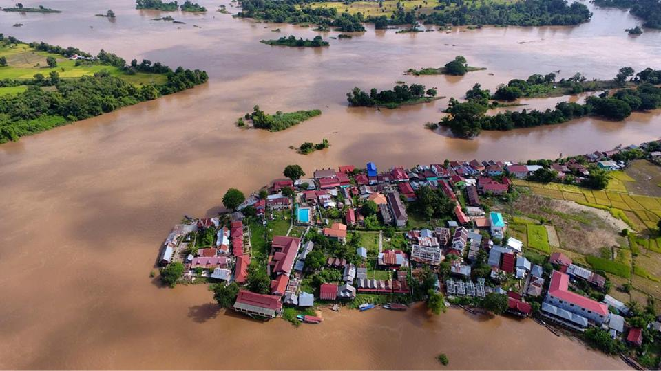
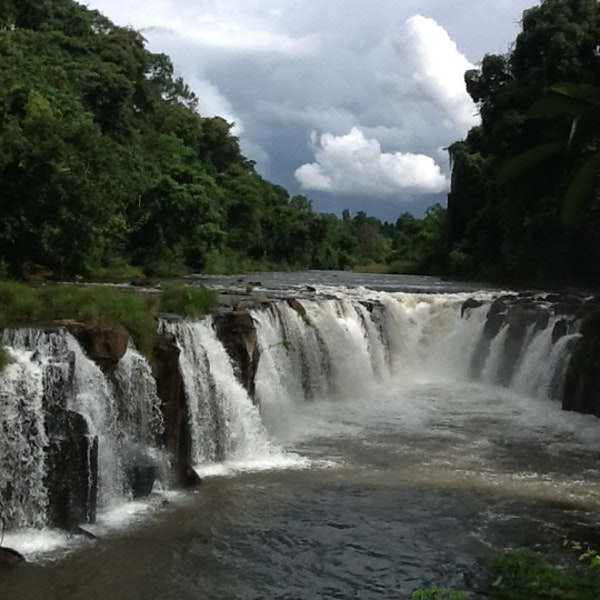

ສີພັນດອນ

ເຂດມະຫານະທີ ສີພັນດອນ ທີ່ເປັນເຂດເກາະດອນນ້ອຍໃຫຍ່ທີ່ ຊ່າລືພືຜ້າ ເລື່ອງເລົ່າຂານຕຳນານພື້ນເມືອງລາວ
ເຊິ່ງນັບແຕ່ດອນພະກ່ຳ ເມືອງຈຳປາສັກ ໄປຕົ້ນຈົນຮອດຊຸມດອນທີ່ຕັ້ງຢູ່ຫົວຄັນເຫວ ຄອນພະເພັງລ້ວນ
ແຕ່ມີຕຳນານພື້ນເມືອງລາວກັນມາຫລາຍ ເຊັ່ນຄົນ: ເລື່ອງດອນນາງໂລງ, ດອນນາງລອຍ, ເລື່ອງສອງບ່າວ ສາວລ່ອງເຮືອລົງ
ຄອນພະເພັງຈົນກະທັງຈົນຮອດດອນໄຊ. ໃນຈຳນວນດອນທີ່ກ່າວກັນວ່າ ສີ່ພັນດອນນັ້ນ
ຄວາມຈິງກໍ່ອາດຈະເຖິງຖ້າວ່ານັບຫມົດທັງນ້ອຍ ແລະ ໃຫຍ່ແຕ່ຖ້າຈຳແນກອອກເຊັ່ນ: ດອນທີ່ມີຄົນອາໄສຢູ່
ດອນທີ່ໃຊ້ລ້ຽງສັດປູກຝັງ ແລະ ດອນທີ່ຟູ ຫລື ພົ້ນນ້ຳແຕ່ຍາມແລ້ງກໍ່ເປັນອີກເລື່ອງຫນຶ່ງຕາມການສຳຫລວດຈາກ
ພາກສ່ວນທີ່ກ່ຽວຂ້ອງດອນ ທີ່ມີປະຊາຊົນອ າໄສຕັ້ງບ້ານເຮືອນຢູ່ທັງຫມົດ 364 ດອນ, ດອນໃຫຍ່ກວ່າຫມູ່
ກໍ່ແມ່ນດອນໂຂງມີຊາວປາຍ ບ້ານຖັດນັ້ນ ກໍ່ມີດອນເບັງ ຫລື ດອນສົມ, ດອນລົບປາດີ, ດອນຊ້າງໄພ, ດອນພິມານ,
ດອນຂະເຫມົາ,ດອນຮີ, ດອນໄຊ, ດອນສັນ, ດອນແດງ, ດອນໂລງ, ດອນຄອນ, ດອນເດດ ແລະ ອື່ນໆ ທີ່ຕັ້ງເກາະກ່າຍກັນໄປ,
ເທິງໜ້ານ້ຳແມ່ຂອງຕອນໃຕ້ ເຊິ່ງມີຄວາມກວ້າງ ປະມານ 15 ກິໂລແມັດ ໃນບັນດາບ້ານທີ່ ຢູ່ເທິງດອນ
ກໍ່ຍັງມີວັດວາສາດສະຫນາເກືອບທຸກບ້ານ ສ່ວນແບບ ແຜນດຳລົງຊີວິດກໍບໍ່ຜິດແປກ ຈາກຜູ້ທີ່ຢູ່ເທິງແຜ່ນດິນໃຫຍ່
ແຕ່ປະການໃດຕົ້ນຕໍອາຊີບກໍ່ແມ່ນການປູກຝັງລ້ຽງສັດ ໂດຍສືບທອດມາຈາກເຊັ່ນ: ປູ່, ຍ່າ,ຕາ, ທວດ
ສິ່ງທີ່ແຕກຕ່າງແດ່ກໍ່ຄົງການເດີນທາງໄປມາຂອງຊາວບ້ານແຖບນີ້
ໃຊ້ເຮືອເປັນພາຫະນະຕົ້ນຕໍໃນການລຳລຽງຂົນສົ່ງຕິດຕໍ່ພົວພັັນກັບຄົນຢູ່ຝັ່ງ ຫລື ລະຫວ່າງດອນດ້ວຍກັນ.
ສ່ວນຮີດຄອງປະເພນີນີ້ ແມ່ນບໍ່ມີການແຕກຕ່າງກັນປະການໃດຄືເຄົາລົບຮີດສິບສອງຄອງສິບສີ່ນຳກັນ ແລະ ອາດຈະມີການແຕກ
ຕ່າງກັນບາງເລັກນ້ອຍ ໂດຍສະເພາະການຕໍ່ສູ້ຫາລ້ຽງຊີບເຊັ່ນ:
ສູ້ກັບການພັດທະນາສູ້ກັບການຊອກຮ່ຳຮຽນຄວາມບໍ່ເປັນທຳສູ້ຊີວິດທີ່ຢູ່ ທ່າມກາງທຳມະຊາດກົດດັນເປັນຕົ້ນສາຍນ້ຳໄຫ.
ຄອນພະເພັງ
ນໍ້າຕົກຕາດຄອນພະເພັງ ແມ່ນໜື່ງໃນບັນດາສະຖານທີ່ ນໍ້າຕົກຕາດທີ່ກວ້າງໃຫຍ່ທີ່ສຸດ ແລະ ມີແມ່ນໍ້າຂອງໄຫຼຜ່ານ
ເປັນບໍລິເວນກວ້າງເຖິງ 14 ກິໂລ ແມັດ. ມີນໍ້າຕົກທີ່ສູງ ແລະ ແຮງທີ່ໜ້າປະທັບໃຈທີ່ສຸດ ໂດຍສະເພາະໃນລະດູຝົນ
ກະແສນໍ້າຈະໄຫຼຄົດລ້ຽວ ແລະ ໂຫດຮ້າຍ. ນໍ້າຕົກຕາດແຫ່ງນີ້ ແມ່ນໄດ້ຖືກສະ ຖາປະນາໃຫ້ເປັນ ນໍ້າຕົກຕາດທີ່ໃຫຍ່ທີ່ສຸດ
ທາງດ້ານບໍລິມາດ ຢູ່ໃນອາຊີຕາເວັນອອກສຽງ ໃຕ້. ນອກຈາກຄວາມສວຍງາມຂອງ ນໍ້າຕົກຄອນພະເພັງ ທີ່ເຕັມ
ໄປດ້ວຍໂງ່ນຫີນສະຫຼັບຢາຍກັນແລ້ວ ກໍ່ຍັງມີພາບການທຳ ມາຫາກິນ ຂອງຊາວບ້ານຄື: ເຕັກນິກວິທີຈັບປາແບບດັ່ງເດີມ.
ນອກນັ້ນ ຍັງມີສະຖານທີ່ນໍ້າຕົກຕາດ ທີ່ໜ້າປະທັບໃຈອີກແຫ່ງ ໜື່ງຊື່ວ່າ: ຫຼີ່ຜີ,ຊຶ່ງສາມາດ ເຂົ້າໄປໄດ້ທາງເຮືອ
ຈາກບ້ານນາກະສັງໄປ. ຖ້າໂຊກດີກໍ່ອາດຈະເຫັນປາຂ່າ ໂລມານໍ້າຈືດ ທີ່ລອຍ ຫຼີ້ນໃນແມ່ນໍ້າຂອງ.ເມື່ອໄປເຖີງດອນຄອນ
ກໍ່ໄປເບິ່ງຫົວລົດໄຟເກົ່າ ໃນສະໄໝຝຣັ່ງເຂົ້າມາປົກຄອງ. ສະຖານທີ່ຕ່າງໆ ທັງໝົດ ແມ່ນສະດວກໃນການເຂົ້າ ໄປຮອດໄປເຖິງ
ແລະ ຄຸ້ມຄ່າໃນການທ່ອງທ່ຽວ.ຖ້າຈະຢຸດພັກຍາວ ກໍ່ມີເຮືອນພັກແບບລາວໆ ໃຫ້ພັກເຊົາ.
ຜາສ້ວນ

ຖ້າເວົ້າເຖິງນ້ຳຕົກຕາດແລ້ວ,ຕາດຜາສ້ວມກໍເປັນອີກແຫ່ງໜຶ່ງທີ່ມີຄວາມສວຍງາມເປັນ
ເອກະລັກໄປອີກແບບໜຶ່ງທີ່ໃຜໆໄດ້ໄປປາກເຊແລ້ວບໍ່ຄວນພາດທີ່ຈະໄປຢ້ຽມຊົມ.
ນອກຕາດຜາສ້ວມແລ້ວໃກ້ໆນັ້ນຍັງມີບ້ານຊົນເຜົ່າທີ່ຜູ້ຈັດການອຸທິຍານທ້າວບາຈຽງ
ໄດ້ຈັດຕັ້ງອະນຸລັກໄວ້ໃຫ້ນັກທ່ອງທ່ຽວໄດ້ສຳຜັດກິ່ນອາຍອັນດັ້ງເດີມຂອງວິຖີຊີວິດ
ຂອງຊົນເຜົ່າທ້ອງຖິ່ນດິນຈຳປາສັກ.ຄຳວ່າສ້ວມ ເປັນພາສາລາວໝາຍເຖິງຫ້ອງຫໍ ຫຼື ຫ້ອງນອນ
ເຊິ່ງລັກສະນະຂອງຕາດສ້ວມຄ້າຍຄືຫ້ອງຫໍຂອງຄູ່ສົມລົດໃໝ່. ຈຸດເດັ່ນຂອງນ້ຳຕົກຕາດຜາສ້ວມຄື
ສາຍນ້ຳທີ່ໄຫຼຜ່ານຫິນຜາຂະໜາດໃຫຍ່ທີ່ມີລັກສະນະເປັນແທ່ງໆ ຮູບຮ່າງຄ້າຍຫ້ອງຫໍ. ຢູ່ໃກ້ໆນັ້ນຍັງມີຮ້ານອາຫານ
ສະຖານທີ່ພັກຜ່ອນຢ່ອນອາລົມທີ່ຕົກແຕ່ງເຂົ້າກັບບັນຍາກາດເອົາແທ້ໆ ຢູ່ບ່ອນນີ້ຜູ້ຈັດການ ວິມົນ ກິດບຳລຸງ
ເພິ່ນໄດ້ເລົ່າໃຫ້ຟັງວ່າ ໃນຮ້ານອາຫານແຫ່ງນີ້ຫ້າມດື່ມເຄື່ອງດື່ມທີ່ມີທາດເຫຼົ້າ, ເຄື່ອງດື່ມລ້ວນແຕ່ແມ່ນສະໝູນໄພ,
ນ້ຳໝາກໄມ້ປັ່ນປະເພດຕ່າງໆ ແລະ ຍັງບໍລິການເຄື່ອງທີ່ລະນຶກ ເປັນຕົ້ນແມ່ນເສື້ອຢືດ ທີ່ພິມຂໍ້ຄວາມ
"ອຸດທະຍານບາຈຽງຈຳປາສັກ", "ເຮົາຮັກທຳມະຊາດ" ແລະອື່ນໆ
ນອກຈາກນີ້ພາຍໃນອຸດທະຍານຍັງມີພິພິທະພັນທີ່ຮວບຮວມເອົາໝູ່ບ້ານບູຮານຂອງຫຼາຍຊົນເຜົ່າມາຈັດສະແດງໃຫ້ນັກທ່ອງທ່ຽວໄດ້ທ່ຽວຊົມ
ສຳຜັດວາດດຳລົງ ຊີວິດອັນດັ້ງເດີມຂອງຊົນເຜົ່າທ້ອງຖິ່ນ, ການນຸ່ງຖື, ສີໄມ້ລາຍມືແລະ
ແຜ່ນແພຂອງຊົນເຜົ່າ,ລັກສະນະຕ່າງໆ ຂອງເຮືອນ, ຟັງສຽງເພງປະສານດົນຕີທ້ອງຖິ່ນ ໃນຈັງຫວະສາລະວັນ ແລະ ສີພັນດອນ
ຟັງແລ້ວອອນຊອນໃຈອີ່ຫຼີ ເຊັ່ນ ເຮືອນຊົນເຜົ່າກະຕາງ ເຊິ່ງເປັນຊົນເຜົ່າທີ່ອາໄສຢູ່ໃນພື້ນທີ່ໃກ້ໆ ນ້ຳຕົກຕາດຜາສ້ວມ,
ເຮືອນຂອງຊົນເຜົ່າອາລັກ, ເຮືອນຂອງຊົນເຜົ່າກະຕູ, ຫໍກວນທີ່ໃຊ້ເປັນສະຖານທີ່ປະກອບພິທີກຳຂອງເຜົ່າລະແວ
ພາຍໃນຈັດສະແດງພິພິທະພັນຂອງເຜົ່າຕ່າງໆ ໃຫ້ຊົມເປັນຈຳຫຼວງຫຼາຍ ແລະ ຫໍເສົາດຽວຂອງຊາວໜຸ່ມເຜົ່າລະແວ
ເຊິ່ງຕາມການເລົ່າຂອງຊົນເຜົ່າເຂົາບອກວ່າ
ເປັນບ່ອນທີ່ບ່າວສາວຂອງເຜົ່າລະແວໄວ້ລົມກັນ(ຈີບກັນ)ແລະທີ່ໜ້າສົນໃຈທີ່ສຸດຄືເຮືອນພັກ
(ລີສອດ)ຂອງທາງອຸດທະຍານທີ່ຕົກແຕ່ງໄດ້ສວຍງາມລົງຕົວ ດ້ວຍວັດຖຸທີ່ຊອກໄດ້ຕາມປ່າຕາມດົງ ໃນເຂດນັ້ນ.